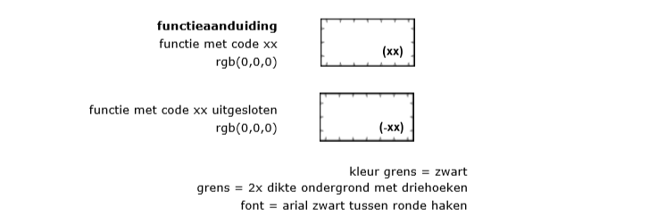
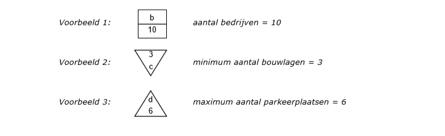
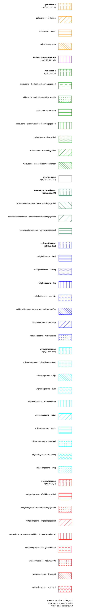

1. Vergelijkbare bestemmingsplannen
De Standaard Vergelijkbare Bestemmingsplannen geeft normen voor de vormgeving en
inrichting van het digitale bestemmingsplan. Deze praktijkrichtlijn geeft
richtlijnen voor de opmaak van de analoge bestemmingsplankaart.
1.1 Grondslagen in Wro, Bro en Regeling standaarden ruimtelijke ordening
Deze richtlijn is van toepassing op bestemmingsplannen, provinciale
inpassingsplannen, rijksinpassingsplannen en rijksbestemmingsplannen. Omwille
van de leesbaarheid worden deze typen instrumenten in dit document samen
aangehaald met de term bestemmingsplan, tenzij hier expliciet van wordt
afgeweken.
In de Regeling
standaarden ruimtelijke ordening is vastgelegd dat
de Standaard Vergelijkbare Bestemmingsplannen (hierna SVBP2012) de norm is voor
de vergelijkbaarheid van bestemmingsplannen. Dit document is een aanvullende,
niet wettelijk vereiste richtlijn naast de SVBP2012. Het is niet verplicht dit
document te gebruiken voor het maken van de analoge bestemmingsplankaart. In het
geval dit document wel wordt gebruikt, wordt geadviseerd de voorschreven
werkwijze te hanteren.
Conform de Wet ruimtelijke ordening (Wro) en het Besluit ruimtelijke ordening (Bro) wordt een bestemmingsplan met de daarbij behorende
toelichting in digitale geautoriseerde bronbestanden vastgelegd en in die vorm
vastgesteld. Daarnaast kent de Wro een papieren versie van (hetzelfde)
bestemmingsplan. Indien de inhoud van digitale stukken tot een andere uitleg
leidt dan de stukken op papier, dan is de digitale inhoud beslissend. Het
bestemmingsplan is daarmee een digitaal juridisch authentiek document. De
informatie die is vastgelegd in het plan moet in elektronische vorm volledig
toegankelijk en raadpleegbaar zijn. Dit wordt de digitale verbeelding genoemd.
De SVBP2012 geeft normen voor de opbouw van de regels en voor de digitale
verbeelding van het bestemmingsplan. Dit document geeft de aanvullende
richtlijnen voor de opmaak van de analoge bestemmingsplan kaarten. Daarbij dient
opgemerkt te worden dat dit document zich dus uitsluitend richt op de analoge
plankaart van het bestemmingsplan, terwijl de SVBP2012 zich richt op het
digitale bestemmingsplan als geheel.
1.2 Leeswijzer
In de volgende hoofdstukken zijn de richtlijnen voor de analoge plankaart van
het bestemmingsplan beschreven. Hoofdstuk 2 bevat de richtlijnen die van
toepassing zijn op de plankaart als geheel, Hoofdstuk 3 de richtlijnen voor de
op de kaart voorkomende bestemmingen, Hoofdstuk 4 de richtlijnen voor
dubbelbestemmingen en Hoofdstuk 5 de richtlijnen voor aanduidingen.
In dit document worden de volgende aanduidingen gehanteerd:
- specificatie tussen
<> haakjes: de gespecificeerde waarde wordt bepaald door de bronhouder;
- specificatie tussen
<<>> haakjes: de gespecificeerde waarde wordt gekozen uit een lijst;
- specificatie tussen [] haakjes: de gespecificeerde waarde wordt letterlijk opgenomen;
- [spatie]: er wordt een enkele spatie opgenomen;
- rgb(x,y,z): een kleurcodering.
De kleurcodering is opgebouwd uit drie primaire additieve kleuren rood, groen en blauw. De hoeveelheid van een kleur loopt van 0
(niets van die kleur) tot en met 255 (alles van die kleur). Het eerste cijfer
(x) geeft de hoeveelheid van de kleur rood aan, het tweede twee cijfer (y) geeft
de hoeveelheid van de kleur groen aan, het derde cijfer (z) geeft de hoeveelheid
van de kleur blauw aan.
2. Het bestemmingsplan
Dit hoofdstuk bevat de richtlijnen die van toepassing zijn op de vormgeving en
inrichting van de analoge bestemmingsplankaart als geheel.
2.1 Opbouw van de analoge bestemmingsplankaart
De analoge bestemmingsplankaart bevat alle te verbeelden informatie die ook in
het digitaal bestemmingsplan is opgenomen. Het gaat hierbij om het plangebied,
de bestemmingen, de dubbelbestemmingen en de aanduidingen. Het bestemmingsplan
wordt vastgesteld met gebruikmaking van een duidelijke ondergrond. Bij het
besluit tot vaststelling van het bestemmingsplan moet worden aangegeven welke
ondergrond is gebruikt. Los van de ondergrond die gebruikt is bij de
vaststelling van het bestemmingsplan, wordt de analoge bestemmingsplankaart
altijd getekend op een heldere en duidelijke ondergrond, waarop de belangrijkste
wegen en waterwegen zijn aangegeven. Indien het plangebied het noodzakelijk
maakt om meerdere analoge bestemmingsplan kaarten te produceren, blijkt uit een
overzichtskaart de aansluiting van de kaarten onderling en de aansluiting aan
het daaromheen gelegen gebied. Tot slot wordt op de analoge bestemmingsplankaart
een noordpijl en schaalaanduiding aangegeven.
De legenda is steeds op dezelfde wijze is opgebouwd. De legenda op de analoge
bestemmingsplankaart van het bestemmingsplan ziet er als volgt uit:
- Plangebied
- Bestemmingen
- bestemmingen
- voorlopige bestemmingen
- uit te werken bestemmingen
- dubbelbestemmingen
- Aanduidingen
- gebiedsaanduidingen
- functieaanduidingen
- bouwvlak
- bouwaanduidingen
- maatvoeringsaanduidingen
- figuren
De bestemmingen worden in de legenda in alfabetische volgorde geplaatst, gevolgd
door eventuele voorlopige en uit te werken bestemmingen, beide eveneens in
alfabetische volgorde. Ook de dubbelbestemmingen worden bij elkaar geplaatst en
in alfabetische volgorde gezet. Tot slot worden de aanduidingen per soort bij
elkaar geplaatst en in alfabetische volgorde gezet.
De planregels verwijzen naar de digitale verbeelding van het bestemmingsplan. De
analoge bestemmingsplankaart voegt zich hier naar. Bij verschillen in naamgeving
in de digitale verbeelding en de analoge bestemmingsplankaart, is de digitale
verbeelding leidend.
2.2 Het plangebied op de analoge bestemmingsplankaart
Centraal op de analoge bestemmingsplankaart staat de weergave van het
plangebied. Het plangebied is gevuld met bestemmingen, dubbelbestemmingen en
aanduidingen.
Op de analoge bestemmingsplankaart wordt de begrenzing van het plangebied
weergegeven met een ononderbroken bolletjeslijn, conform de specificatie in
Figuur 1.
Figuur 1 Het plangebied op de analoge bestemmingsplankaart
3. Bestemmingen
Dit hoofdstuk bevat de richtlijnen die van toepassing zijn op de vormgeving en
inrichting van de op de analoge bestemmingsplankaart voorkomende bestemmingen.
3.1 Algemeen
Dit hoofdstuk is van toepassing op de op de analoge bestemmingsplankaart
voorkomende bestemmingen die ingevolge artikel 3.1 Wro aan gronden worden
toegekend. Een bestemming heeft betrekking op een geometrisch bepaald vlak.
Bestemmingen in de vorm van een lijn of een punt komen niet voor.
3.2 Hoofdgroepen van bestemmingen
In de SVBP2012 is een bindende lijst met hoofdgroepen van bestemmingen
opgesteld. Van iedere specifieke bestemming, voorlopige bestemming en uit te
werken bestemming is vastgelegd onder welke hoofdgroep deze valt. Op de analoge
bestemmingsplankaart krijgen alle geometrisch bepaalde vlakken waar de
bestemmingen, voorlopige bestemmingen en uit te werken bestemmingen betrekking
op hebben, de kleur van de hoofdgroep waar deze onder valt, conform de
specificatie in Figuur 2.
De begrenzing van deze vlakken wordt weergegeven door
een ononderbroken lijn. Op de analoge bestemmingsplankaart wordt tevens gebruik
gemaakt van lettercodes. Deze lettercodes zijn uitsluitend zichtbaar op de
analoge bestemmingsplankaart en in de bijbehorende legenda; ze worden niet in de
planregels opgenomen en zijn ook niet zichtbaar in de digitale verbeelding

Figuur 2 Weergave hoofdgroepen van bestemmingen op de analoge
bestemmingsplankaart
3.3 Lettercode van een bestemming
Iedere bestemming heeft een lettercode op de analoge bestemmingsplankaart. De
letters worden in zwarte hoofdletters weergegeven. Voor de lettercode van een
bestemming zijn vier varianten mogelijk:
Variant 1 – lettercode van de hoofdgroep hanteren
Indien de naam van de bestemming gelijk is aan de naam van de hoofdgroep wordt
de lettercode op de analoge bestemmingsplankaart van de bestemming gelijk aan de
lettercode van de hoofdgroep. Dit komt overeen met variant 1 in de SVBP2012. De
lettercode van de bestemming wordt als volgt opgenomen:
<<LETTERCODE HOOFDGROEP>>
Voorbeeld: A
Variant 2 - specifieke lettercode gebruiken
Indien de naam van de bestemming nader gespecificeerd is conform variant 2 in de
SVBP2012, dan wordt de lettercode van de bestemming als volgt opgenomen:
<<LETTERCODE HOOFDGROEP>> [-] <LETTERCODE VAN DE BESTEMMING>
Voorbeeld: de bestemming Agrarisch – Viskwekerij wordt weergegeven als A-VK
Voor bepaalde specifieke bestemmingen wordt een vaste lettercode gespecificeerd.
Hiertoe is een functielijst opgesteld die als separate bijlage naast de SVBP2012
van toepassing is. De functielijst is verdeeld in drie kolommen: functies,
hoofdgroepen en lettercodes. De lettercode genoemd bij de functie wordt
gebruikt. Indien er een bestemming wordt gespecificeerd waarvan de functie niet
voorkomt op de functielijst, dan kiest de bronhouder zelf een unieke lettercode
die het meest van toepassing is. De gekozen lettercode komt nog niet voor op de
functielijst en behoort niet toe aan andere enkel- en dubbelbestemming,
bouwaanduidingen en gebiedsaanduidingen.
Variant 3 - Bestemming splitsen
Indien de naam van de bestemming nader gesplitst is conform variant 3 in de
SVBP2012, dan wordt de lettercode van de bestemming als volgt opgenomen:
<<LETTERCODE HOOFDGROEP>> [-] <cijfer>
Voorbeeld: de bestemming Gemengd - 1 wordt weergegeven als GD-1
Variant 4 – lettercode van een bestemming onder de hoofdgroep Overig
Indien de naam van de bestemming nader gespecificeerd is binnen de hoofdgroep
Overig conform variant 4 in de SVBP2012, dan kiest de bronhouder zelf een unieke
lettercode. De gekozen lettercode komt nog niet voor op de functielijst en
behoort niet toe aan andere enkel- en dubbelbestemming, bouwaanduidingen en
gebiedsaanduidingen. De lettercode van de bestemming wordt als volgt opgenomen:
<LETTERCODE VAN DE BESTEMMING>
Voorbeeld: de bestemming Enclave wordt weergegeven als E
3.4 Lettercode van een voorlopige bestemming
Iedere voorlopige bestemming heeft een lettercode.
De lettercode van een voorlopige bestemming wordt als volgt opgenomen:
<<LETTERCODE HOOFDGROEP>> [-] [VRL]
Voorbeeld: de bestemming Agrarisch – Voorlopig wordt weergegeven als A-VRL
In het geval een voorlopige bestemming wordt gespecificeerd, wordt de lettercode
van de bestemming als volgt opgenomen:
<<LETTERCODE HOOFDGROEP>> [-] <LETTERCODE VAN DE BESTEMMING>. [spatie] [VRL]
Voorbeeld: Agrarisch – Grondgebonden Voorlopig wordt weergegeven als A-GRG-VRL
In het geval dat een voorlopige bestemming wordt gesplitst, wordt de lettercode
van de bestemming als volgt opgenomen:
<<LETTERCODE HOOFDGROEP>> [-] [VRL] <cijfer>
Voorbeeld: Agrarisch – Voorlopig 1 wordt weergegeven als A-VRL1
3.5 Lettercode van een uit te werken bestemming
Iedere uit te werken bestemming heeft een lettercode.
De lettercode van een uit te werken bestemming wordt als volgt opgenomen:
<<LETTERCODE HOOFDGROEP>> [-] [U]
Voorbeeld: de bestemming Agrarisch – Uit te werken wordt weergegeven als A-U
In het geval dat een uit te werken bestemming wordt gesplitst, wordt de
lettercode van een uit te werken bestemming als volgt opgenomen:
<<LETTERCODE HOOFDGROEP>> [-] [U] <cijfer>
Voorbeeld: Agrarisch – Uit te werken 1 wordt weergegeven als A-U1
5. Aanduidingen
Dit hoofdstuk bevat de richtlijnen die van toepassing zijn op de vormgeving en
inrichting van de op de analoge bestemmingsplankaart voorkomende aanduidingen.
5.1 Algemeen
Behalve bestemmingen en dubbelbestemmingen zijn binnen het bestemmingsplan
aanduidingen te onderscheiden. Er zijn zes soorten aanduidingen te
onderscheiden:
- bouwvlak;
- functieaanduiding;
- bouwaanduiding;
- maatvoering;
- figuur;
- gebiedsaanduidingen.
Voor ieder type aanduiding is in dit hoofdstuk de weergave op de analoge
bestemmingsplankaart gegeven. Met uitzondering van de aanduiding figuur zijn de
hiervoor genoemde aanduidingen geometrisch begrensd en hebben zij betrekking op
een vlak. Een figuur bestaat uit lijnstukken.
5.2 Bouwvlak
Een bouwvlak is een aanduiding waarvan er slechts 1 soort is. Een bouwvlak wordt
op de analoge bestemmingsplankaart weergegeven door dikke lijnen overeenkomstig
Figuur 4. Voor het bouwvlak wordt op de analoge bestemmingsplankaart geen
gebruik gemaakt van lettercodes.
Een bouwvlak wordt als volgt weergegeven op de analoge bestemmingsplan kaart:

Figuur 4 Weergave bouwvlak op de analoge bestemmingsplankaart
5.3 Functieaanduiding
Functieaanduidingen worden op de analoge bestemmingsplankaart weergegeven met
een zwarte lettercode tussen ronde haken. In Figuur 5 is de wijze waarop de
begrenzing van een aanduidingvlak wordt weergegeven, evenals de lettercode van
de functieaanduiding.
Voor de lettercode van een functieaanduiding zijn twee varianten mogelijk:
Variant 1 - lettercode uit de functielijst opnemen
Er is een functielijst opgesteld die als separate bijlage naast de SVBP2012 van
toepassing is. Indien er gebruik gemaakt wordt van een functie die voorkomt op
deze lijst, dan wordt de lettercode van de functieaanduiding als volgt
opgenomen:
[(] <<lettercode>> [)]
Voorbeeld: bedrijfswoning wordt opgenomen als (bw)
In het geval dat een functie die voorkomt op de functielijst niet is toegestaan
op een locatie in het bestemmingsplan, wordt deze negatieve functieaanduiding
als volgt opgenomen:
[(] [-] <<lettercode>> [)]
Voorbeeld: bedrijfswoning uitgesloten wordt opgenomen als (-bw)
Variant 2 - specifieke lettercode opnemen
Naast het werken met functies van de functielijst mag er als dat nodig is voor
een goede ruimtelijke ordening, ook gewerkt worden met specifieke functies. Een
specifieke functie is een functie die niet voorkomt op de functielijst. De
lettercode van een specifieke functie wordt geheel met kleine letters
geschreven, cijfers worden als Arabische cijfers geschreven en de
functieaanduiding wordt als volgt opgenomen:
[(] [s] <<lettercode hoofdgroep>> [-] <specificatie> [)]
Voorbeeld 1: specifieke vorm van agrarisch – deels grondgebonden wordt opgenomen als (sa-dgg)
Voorbeeld 2: specifieke vorm van maatschappelijk - 1 wordt opgenomen als(sm-1)
Voor de <<lettercode hoofdgroep>> wordt gekozen uit een van de hoofdgroepen
die gehanteerd worden bij bestemmingen en dubbelbestemmingen, behalve de
hoofdgroep ‘Overig’. De gekozen waarde wordt met kleine letters opgenomen.
In het geval dat een specifieke functie niet is toegestaan op een locatie in het
bestemmingsplan, wordt deze uitgesloten functie als volgt opgenomen:
[(] [-] [s] <<lettercode hoofdgroep>> [-] <specificatie> [)]
Voorbeeld: specifieke vorm van recreatie uitgesloten - groepsverblijf wordt opgenomen als (-sr-grv)

Figuur 5 Weergave functieaanduidingen op de analoge bestemmingsplankaart
5.4 Bouwaanduiding
Bouwaanduidingen worden met kleine zwarte cursieve lettercodes tussen blokhaken
weergegeven. Deze gebruikte lettercodes worden niet opgenomen in de planregels.
De begrenzing van de bouwaanduiding is in Figuur 6 weergegeven. Voor de
lettercode van een bouwaanduiding zijn twee varianten mogelijk:
Variant 1 – lettercode uit de functielijst opnemen
In de SVBP2012 is een bindende lijst met bouwaanduidingen opgesteld. In deze
variant wordt een aanduiding uit deze lijst cursief en tussen blokhaken op de
analoge bestemmingsplankaart opgenomen. Voor iedere aanduiding uit deze lijst is
een vaste lettercode van toepassing conform onderstaande tabel.
| aaneengebouwd |
aeg |
| antennemast |
am |
| bijgebouwen |
bg |
| gestapeld |
gs |
| kap |
kap |
| karakteristiek |
ka |
| nokrichting |
nr |
| onderdoorgang |
ond |
| plat dak |
pd |
| twee-aaneen |
tae |
| vrijstaand |
vrij |
Deze aanduidingen worden als volgt opgenomen:
[[] <<bouwaanduidingcode>> []]
Voorbeeld: de bouwaanduiding aaneengebouwd wordt opgenomen als [aeg]
In het geval dat een bepaalde bouwwijze of verschijningsvorm die voorkomt op de
vaste lijst niet is toegestaan op een locatie in het bestemmingsplan, wordt
gebruik gemaakt van een negatieve bouwaanduiding. Deze negatieve bouwaanduiding
wordt als volgt opgenomen:
[[] [-] <<bouwaanduidingcode>> []]
Voorbeeld: de bouwaanduiding aaneengebouwd uitgesloten wordt opgenomen als [-aeg]
Variant 2 - specifieke lettercode opnemen
Naast het werken met bouwaanduidingen uit de vaste lijst uit de SVBP2012 mag er
als dat nodig is voor een goede ruimtelijke ordening, ook gewerkt worden met
specifieke bouwaanduidingen. Een specifieke bouwaanduiding is een bouwaanduiding
die niet voorkomt op de genoemde lijst. De lettercode van de specifieke
bouwaanduiding wordt als volgt opgenomen:
[[] [sba] [-] <specifieke code> []]
Voorbeeld 1: specifieke bouwaanduiding - stolp wordt opgenomen als [sba-sto]
Voorbeeld 2: specifieke bouwaanduiding - 1 wordt opgenomen als [sba-1]
In het geval dat een bepaalde bouwwijze of verschijningsvorm niet is toegestaan
op een locatie in het bestemmingsplan, wordt gebruik gemaakt van een negatieve
specifieke aanduiding. De negatieve verzamelaanduiding wordt als volgt
opgenomen:
[[] [-] [sba] [-] <specifieke code> []]
Voorbeeld 1: specifieke bouwaanduiding uitgesloten - stolp wordt opgenomen als [-sba-sto]
Voorbeeld 2: specifieke bouwaanduiding uitgesloten - 1 wordt opgenomen als [-sba-1]
In het geval het voor de leesbaarheid van de analoge bestemmingsplankaart
gewenst is dezelfde lettercode voor de bouwaanduiding binnen één
bestemmingsvlak, bouwvlak of gebiedsaanduiding een of meerdere keren te
herhalen, dan worden meerdere plaatsingspunten aangegeven.

Figuur 6 Weergave bouwaanduiding op de analoge bestemmingsplankaart
5.5 Maatvoering
Op de analoge bestemmingsplankaart worden de maatvoeringvlakken weergegeven op
de wijze, zoals in Figuur 8 aangegeven maatvoeringsymbolen. De maatvoering wordt
in het maatvoeringvlak door middel van een maatvoeringsymbool (ook wel matrix of
matrixsymbool genoemd) weergegeven. Er worden vaste symbolen en symboolcodes
gebruikt op de analoge bestemmingsplankaart. Bij het gebruik van een
maatvoeringsymbool op de analoge bestemmingsplankaart, is het conform IMRO
verplicht de code van het symbool op te nemen in het digitale bestemmingsplan.
Voor het plaatsen van een maatvoeringsymbool op de analoge bestemmingsplankaart
worden de volgende uitgangspunten gehanteerd:
- plaatsingspunt van het symbool: coördinaten van het zwaartepunt (center, center) van de matrix;
- aanpijlingspunt: coördinaten van het punt waar het symbool bij hoort (indien dit niet het plaatsingspunt is). De lijn tussen plaatsingspunt en aanpijlingspunt wordt niet opgenomen;
- hoek: waaronder symbool geplaatst wordt, eenheid: graden ten opzichte van Noordpijl, rechtsom = positief.

Figuur 7 Maatvoeringsymbolen
In de symbolen s128, s129 en s130 wordt op de plaats van de letter j de waarde
weergegeven die behoort bij de maatvoeringsaanduiding. Op de plaats van x wordt
de keuze uit Tabel 1 met maatvoeringsymbolen weergegeven. Daarbij wordt alleen
de specificatie na de algemene symboolcode s128, s129 en s130 opgenomen.

De volledige lijst met mogelijke maatvoeringsaanduiding met symboolcodes is
opgenomen in de tabel Maatvoering waarde met symboolcode.
Maatvoering waarde met symboolcodeMaatvoering | SymboolCode |
|---|
waarde | gebruik zonder voorvoegsel | gebruik met voorvoegsel [minimum] | gebruik met voorvoegsel [maximum] | gebruik met voorvoegsel [minimum en maximum] |
|---|
aantal | s128a | | | |
aantal aaneen te bouwen wooneenheden | s128ab | s129x | s121 | |
aantal bedrijven | s128b | s129a | s130a | |
aantal bezoekers | s128c | s129b | s130b | |
aantal bouwlagen | s128d | s129c | s120 | |
aantal gebouwen | s128e | s129d | s130c | |
aantal parkeerplaatsen | s128f | s129e | s130d | |
aantal rijstroken | s128g | s129f | s130e | |
aantal sporen | s128h | s129g | s130f | |
aantal winkels | s128i | s129h | s130g | |
aantal wooneenheden | s128j | s129i | s119 | |
bebouwd oppervlak (m2) | s128l | s129j | s130h | |
bebouwingspercentage (%) | s128m | s129k | s109 | |
bouwhoogte (m) | s128r | s103 | s104 | s105 |
breedte (m) | s128n | s129l | s130i | |
dakhelling (graden) | s128o | s106 | s107 | s108 |
diepte (m) | s128p | s129m | s130s | |
goothoogte (m) | s128s | s100 | s101 | s102 |
hoogte (m) | s128q | s129n | s130j | |
hoogteligging vlak (m) | s128t | s129o | s130k | |
lengte (m) | s128u | s129p | s130l | |
maatvoering | s128k | | | |
oppervlakte (m2) | s128v | s129q | s130m | |
verticale bouwdiepte (m) | s122 | s129y | s130t | |
vloeroppervlakte (m2) | s128ac | s129r | s130n | |
vloeroppervlakte; bruto (m2) | s128w | s129s | s130o | |
vloeroppervlakte; bvo (m2) | s128x | s129t | s127 | |
vloeroppervlakte; netto (m2) | s128y | s129u | s130p | |
vloeroppervlakte; vvo (m2) | s128z | s129v | s130q | |
volume (m3) | s128aa | s129w | s130r | |
goothoogte en bouwhoogte (m) | | s110 | s111 | s112 |
goothoogte, bouwhoogte (m), dakhelling (graden) | | s113 | s114 | s115 |
goothoogte, bouwhoogte (m), dakhelling (graden), maximum bebouwingspercentage (%) | | s116 | s117 | s118 |
bouwhoogte (m), maximum bebouwingspercentage (%) | | | s123 | s125 |
goothoogte, bouwhoogte (m), maximum bebouwingspercentage (%) | | | s124 | |
bouwhoogte (m), aantal bouwlagen, maximum bebouwingspercentage (%) | | | s126 | |
<overige waarde 1> | s128ad | s129z | s130u | |
<overige waarde 2> | s128ae | s129aa | s130v | |
<overige waarde 3> | s128af | s129ab | s130w | |
In het geval het voor de leesbaarheid gewenst is op de analoge
bestemmingsplankaart hetzelfde maatvoeringsymbool binnen één bestemmingsvlak,
bouwvlak of gebiedsaanduiding een of meerdere keren te herhalen, dan worden
meerdere plaatsingspunten in één object Maatvoering geplaatst.

Figuur 8 Weergave maatvoering op de analoge bestemmingsplankaart
5.6 Figuur
Figuren worden op de analoge bestemmingsplankaart weergegeven conform de
aanduidingen in Figuur 9. Bij leidingen kan de hartlijn van de aanduiding worden
geplaatst in het vlak van de dubbelbestemming. In de hartlijn kan worden
aangegeven om welke leiding het gaat.

Figuur 9 Weergave figuren op de analoge bestemmingsplankaart
5.7 Gebiedsaanduidingen
In de SVBP2012 is een bindende lijst met hoofdgroepen van gebiedsaanduidingen
opgesteld. Van iedere specifieke gebiedsaanduiding is vastgelegd onder welke
hoofdgroep deze valt.
In de legenda op de analoge bestemmingsplankaart wordt de volledige naam van de
aanduiding gegeven. Voor de weergave van een gebiedsaanduiding op de analoge
bestemmingsplankaart zijn twee varianten mogelijk:
Variant 1 - naam van de hoofdgroep hanteren
De naam van de gebiedsaanduiding is gelijk aan de naam van de hoofdgroep. De
gebiedsaanduiding wordt weergegeven door de arceringen en kleuren zoals in
Figuur 10. De naam van de gebiedsaanduiding wordt als volgt opgenomen:
Voorbeeld: geluidzone
Variant 2 - specificieke gebiedsaanduiding gebruiken
In deze variant wordt de gebiedsaanduiding weergegeven door de arceringen in de
kleuren die in Figuur 10 zijn weergegeven.
Voorbeeld: wetgevingzone - afwijkingsgebied
Als het voor een goede ruimtelijke ordening wenselijk is om meerdere varianten
van dezelfde specifieke gebiedsaanduiding te gebruiken, dan kunnen deze verder
gespecificeerd worden met een nadere tekstuele aanduiding in de vorm van een
woord of een Arabisch cijfer. Wordt onderscheid gemaakt tussen de verschillende
vlakken/soorten door aan de arcering in een zwart cursief weergegeven Arabisch
cijfer toe te voegen, dan is dit Arabisch cijfer ook in de naam van de
gebiedsaanduiding opgenomen.
Voorbeeld 1: wetgevingzone – wijzigingsgebied 1
Voorbeeld 2: wetgevingzone - afwijkingsgebied milieu
Ook is het mogelijk onderscheid tussen deze gebiedsaanduidingen te maken door de
arcering dichter of opener weer te geven.

Figuur 10 Weergave gebiedsaanduidingen op de analoge bestemmingsplankaart